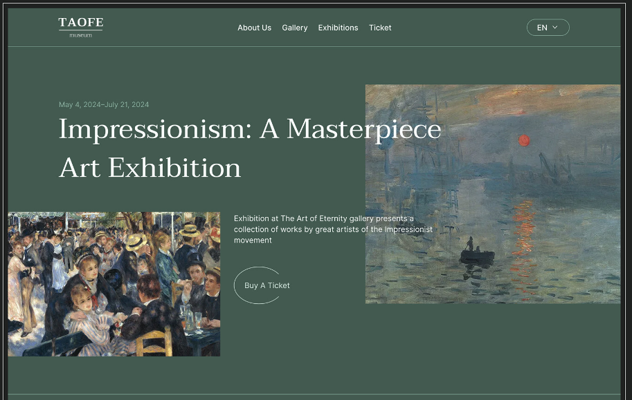

Projeto: Site sobre o Impressionismo
Esse projeto deu abertura para Ludís crescer na sua área de trabalho; o 1° trabalho a ser monetizado
Ludís Meides mexe com design desde dos 16 anos, e começou atuar na área com 18 anos. Já carrega 3 trabalhos de alto reconhecimento.
Trabalha no back-end e principalmente com o front-end; tem alto entendimento em diversas áreas de conhecimentos, e interesses, trabalha com múltiplas vertentes/temáticas.
Versátil, comprometidade, detalhista, determinada, focada e visionária.
Esse projeto deu abertura para Ludís crescer na sua área de trabalho; o 1° trabalho a ser monetizado
Este projeto abriu portas para sua carreira ao mundo, é o mais famoso. Sendo produzido e direcionado ao idioma inglês; com a sua proposta de uma plataforma mais funcional, de acordo com as críticas do público, melhorado.
Projeto mais recente, nele ela continua com o público internacional em foco. Expandiu para um cénario de sites de notícias, e mais informações a serem atualizadas, e colocadas diariamente; ajudando no seu entendimento e conhecimento de informações, organização e eficiência em sites.